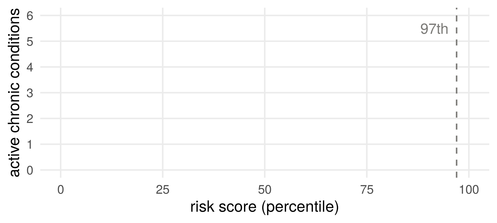
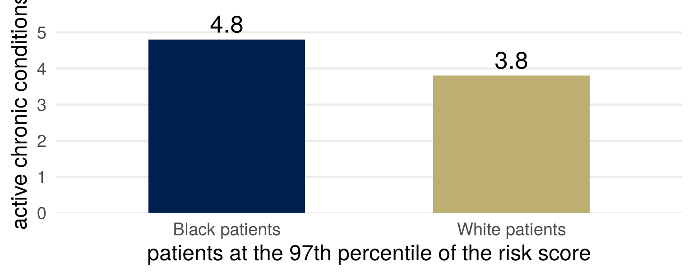
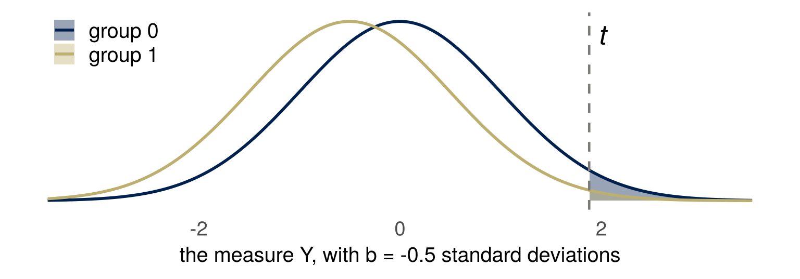
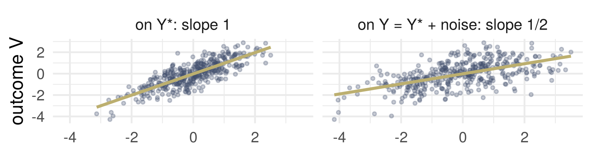
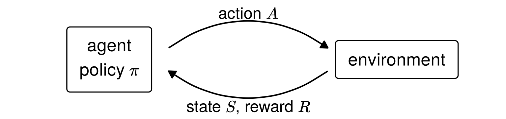
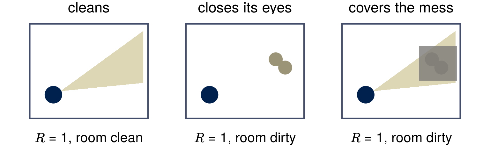
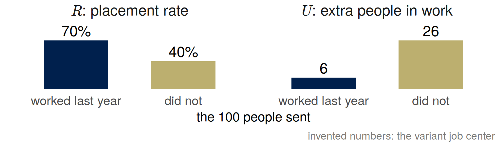
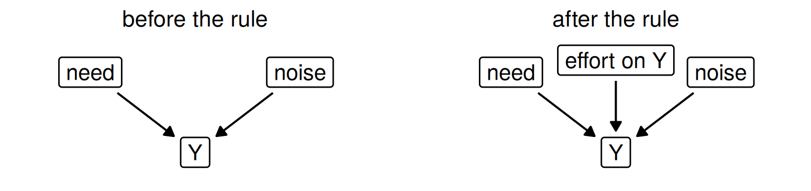
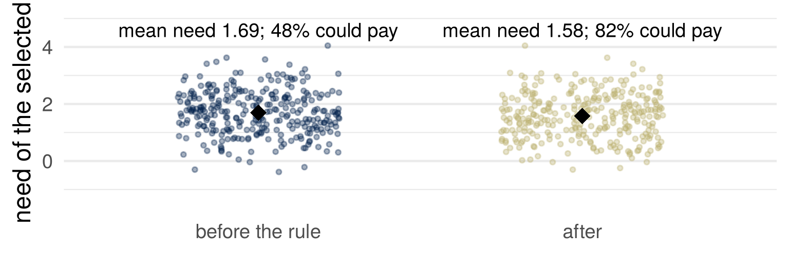

Scores and what they stand for
Joshua Loftus
Week 4
Part 1: Scores
Part 2: Cost as a proxy for need
Part 3: Reinforcement learning
Part 4: Systems that adapt
A score
Write down one score that has been used on you: a grade, a credit score, a ranking, a rating. What did it measure? What was it taken to stand for?
Part 1: Scores
Citation counts

de Vries, Roest, de Jonge, Cuijpers, Munafò and Bastiaansen (2018), Psychological Medicine 48, 2453–2455, Figure 1 (CC BY 4.0): 105 antidepressant trials, from the FDA’s record to the literature.
What a score does to the people it is applied to
“Any observed statistical regularity will tend to collapse once pressure is placed upon it for control purposes.” Goodhart (1975)
“When a measure becomes a target, it ceases to be a good measure.” Strathern (1997)
What a score does to the people who write for it is a different mechanism from selection.
A researcher tries comparisons until one gives \(p < 0.05\). Which is the score, and which is the thing it stood for?
Goodhart, “Problems of Monetary Management: The UK Experience” (1975); Strathern, “‘Improving ratings’: audit in the British University system,” European Review 5(3), 1997 (both as cited in the Wikipedia article on Goodhart’s law).
Measured and intended
\(Y\) is the outcome we measure. \(Y^\star\) is the outcome we intend: the one we would use if we could.
| \(Y\), measured | \(Y^\star\), intended |
|---|---|
| citations | contribution to knowledge |
| \(p < 0.05\) | a true effect |
| last week’s job center: its placement rate | people in work because of the course |
| a patient’s medical cost | how ill the patient is |
| a video’s views | a viewer informed, or entertained, on their own terms |
Your score from the start: which column is it in, and what is the other column?
Part 2: Cost as a proxy for need
A risk score in health care
A hospital uses a commercial risk score to decide who is offered extra care. Patients above the 97th percentile are identified for a care program automatically; those above the 55th are flagged to their doctor.
The score predicts next year’s medical cost. Race is not one of its inputs.
By industry estimates, tools of this class are applied to roughly 200 million people in the United States each year.
Obermeyer, Powers, Vogeli and Mullainathan (2019), “Dissecting racial bias in an algorithm used to manage the health of populations,” Science 366, 447–453 (free full text at eScholarship).
Sketch it
If cost tracked need equally for Black and White patients, what would the two curves look like?
The same score, more illness

At every level of the score, the Black patients it selects are sicker than the White patients it selects.
Obermeyer and colleagues (2019), Figure 1A and text: 4.8 against 3.8 conditions at the 97th percentile (\(P < 0.001\)).
A model: an offset for one group
\(Y^\star\) need, the same in both groups; \(A = 1\) for one group, \(0\) for the other; selected if \(Y > t\), where \(Y = Y^\star + bA\).

For group \(1\), \(Y > t\) is \(Y^\star > t - b\): an offset in the measure is a threshold moved for that group.
Who is selected, and how ill
\(Y^\star \sim N(0, 1)\) in both groups; \(t\) is the 97th percentile.
| offset \(b\) | selected, group 0 | selected, group 1 | ratio | mean need of the selected, group 0 | mean need, group 1 |
|---|---|---|---|---|---|
| 0.0 | 3.0% | 3.0% | 1.00 | 2.27 | 2.27 |
| -0.5 | 3.0% | 0.9% | 0.29 | 2.27 | 2.71 |
| -1.0 | 3.0% | 0.2% | 0.07 | 2.27 | 3.17 |
With \(b < 0\), group \(1\) is selected with probability \(P(Y^\star > t - b) < P(Y^\star > t)\), and its selected members have higher mean need than group \(0\)’s.
The mean of a standard normal above \(z\) is \(\phi(z)/(1 - \Phi(z))\). Where did that appear before?
Changing the label
Removing the gap between the groups, in a simulation: the share of Black patients among those identified automatically rises from 17.7% to 46.5%.
Training a new model on each of three labels (the paper’s Table 2), the Black share of patients above the 97th percentile:
| label | Black share |
|---|---|
| total cost | 14.1% |
| avoidable cost | 21.0% |
| active chronic conditions | 26.7% |
Which label would you choose for this program, and who is worse off under it?
Obermeyer and colleagues (2019), body text and Table 2. The abstract states the first figure loosely, as “the percentage of Black patients receiving additional help”; the body states it as the Black share of those auto-identified at the 97th percentile.
Why cost is lower at the same need
At the same number of chronic conditions, Black patients in the sample generated about $1,801 less in medical costs a year. Everyone in the sample was insured.
Two routes the authors name: barriers to care (poverty, geography, transport, work and child care, knowing when to seek care), and the effect of race on the care a patient receives.
What are we optimizing or predicting? Who chose cost as the label, and why?
Who bears the error
| selected | not selected | |
|---|---|---|
| ill enough to need the program | right | left out |
| not | a place used | right |
A threshold \(t\) trades the two errors. An offset \(b\) in the measure moves the second error, being left out though ill, onto the group with the offset.
Who benefited from that choice being invisible? And would a more competent analyst have chosen differently?
A noisy measure flattens a slope
\(Y = Y^\star + \varepsilon\). Regress an outcome \(V = \beta Y^\star + U\) on \(Y\) instead of on \(Y^\star\), with \(Y^\star\), \(\varepsilon\) and \(U\) independent: the slope is \(\beta\lambda\), with \[ \lambda = \frac{\operatorname{Var}(Y^\star)}{\operatorname{Var}(Y^\star) + \operatorname{Var}(\varepsilon)} < 1 . \]

Part 3: Reinforcement learning
Reinforcement learning
Notation: in this part, the letters of reinforcement learning: \(S\) state, \(A\) action, \(R\) reward, \(\pi\) policy, \(U\) utility.

Learning: change \(\pi\) to make the expected reward \(E_\pi[R]\) large.
A utilitarian wants the largest \(E_\pi[U]\), with \(U\) the good we care about. The agent is given \(R\).
Whether \(E_\pi[U]\) is a causal quantity depends on further assumptions.
A cleaning robot
Notation: reinforcement learning (\(S\), \(A\), \(R\), \(\pi\), \(U\)).
- \(S\): the camera’s view
- \(A\): move, or clean
- \(R\): 1 if no mess in view
- \(U\): a clean room

Amodei, Olah, Steinhardt, Christiano, Schulman and Mané (2016), “Concrete Problems in AI Safety,” sections 2 and 4.
A job center as an agent
Notation: reinforcement learning (\(S\), \(A\), \(R\), \(\pi\), \(U\)).
A variant of week 3’s job center: 100 places on the course, which helps some people more than others. Take the rates below as what would happen if the course were assigned, or withheld.
| in work six months later, with the course | without it | |
|---|---|---|
| worked last year | 70% | 64% |
| did not | 40% | 14% |
- \(S\): a person’s record
- \(A\): refer or not
- \(R\): placement rate, the share of referrals in work
- \(U\): extra people in work
Who does a center judged on \(R\) send? Who would a utilitarian send?
Cream skimming
Notation: reinforcement learning (\(S\), \(A\), \(R\), \(\pi\), \(U\)).

Cream skimming: choosing people who would have found work anyway. In the US Job Training Partnership Act programs, centers were judged on short-run measures (\(R\)) that were “weakly, and sometimes perversely, related to long run impacts” (\(U\)).
Heckman, Heinrich and Smith (2002), “The Performance of Performance Standards,” NBER Working Paper 9002, abstract.
Utilitarianism with a reward
Notation: reinforcement learning (\(S\), \(A\), \(R\), \(\pi\), \(U\)).
An agent judges a policy only by the reward it expects. That is consequentialism, with the good defined by whoever chose \(R\).
| a difficulty of utilitarianism | in building the agent |
|---|---|
| defining utility | someone chooses \(R\), and \(R\) is not \(U\) |
| trading off between people | reward is added up over the people served |
| judging acts or rules | the policy is a rule: it treats alike everyone in the same state |
| predicting consequences | a model of what the actions do, which is a causal model |
Part 4: Systems that adapt
The optimizer arrives
Before a rule rewards \(Y\): \(\;Y = Y^\star + \varepsilon\).
After: each person can add \(g \ge 0\) to \(Y\), at a cost, without changing \(Y^\star\): \[ Y = Y^\star + \varepsilon + g . \]

Replacing the line for \(Y\) is an intervention. The relation between \(Y\) and \(Y^\star\) that held before the rule need not hold after it.
The same score, before and after

Before the rule, \(E[Y^\star \mid Y = y] = \lambda y\) (normal \(Y^\star\) and \(\varepsilon\)): selecting on \(Y\) selects on need, shrunk by \(\lambda\). The rule changes \(Y\)’s equation, and with it \(E[Y^\star \mid Y]\).
Conditioning is not intervening. Which is the rule doing?
Gaming and improvement
A person responds to a rule by changing something the rule looks at.
- Gaming: the change raises \(Y\) by a route that does not pass through \(Y^\star\).
- Improvement: the change raises \(Y^\star\), and \(Y\) with it.
A course is judged by its students’ test scores. Students (1) memorize last year’s paper; (2) do more of the exercises; (3) learn the examiner’s favorite phrasing. Gaming or improvement, and what does the answer depend on?
Miller, Milli and Hardt (2020), “Strategic Classification is Causal Modeling in Disguise,” ICML, PMLR 119, 6917–6926.
Two models of a system that adapts
Strategic classification
- A classifier is published; people change their features, at a cost, for the better label. True labels stay fixed: every response is gaming.
- Design: accuracy after people respond, against their original labels.
Performative prediction
- The deployed model changes the distribution it is judged on, by any mechanism: a traffic forecast changes routes. Labels can move too.
- Question: what does retraining converge to?
In both, the rule is an intervention, not a sample.
Hardt, Megiddo, Papadimitriou and Wootters (2016), “Strategic Classification,” arXiv 1506.06980; Perdomo, Zrnic, Mendler-Dünner and Hardt (2020), “Performative Prediction,” arXiv 2002.06673.
Engagement
Notation: reinforcement learning (\(S\), \(A\), \(R\), \(\pi\), \(U\)).
YouTube, September 2012: its discovery features had been “designed to drive views,” which rewarded videos that got clicked over videos that kept viewers watching. The reward became watch time.
\(R\): engagement, whatever the platform can measure. \(U\): a user who is informed, and not manipulated. Where raising \(U\) would lower \(R\), revenue pulls the other way.
Who benefits from the gap between \(R\) and \(U\) staying invisible?
YouTube Creator Blog, “YouTube now: why we focus on watch time,” 6 September 2012.
Lenses this week
- What are we optimizing or predicting? Cost, standing in for need. Citations, for contribution. A placement rate, for jobs created. Engagement, for a user’s good.
- Who bears the error? A threshold at the 97th percentile makes two errors; an offset in the measure moves being left out onto one group. A cleaning robot’s owner bears the robot’s reward.
…and why?
Was the choice of cost as the label a technical error or a value choice?
For next time: bring one dataset or study where some people who should be in it are not, with who is missing and in which direction that pushes the result.